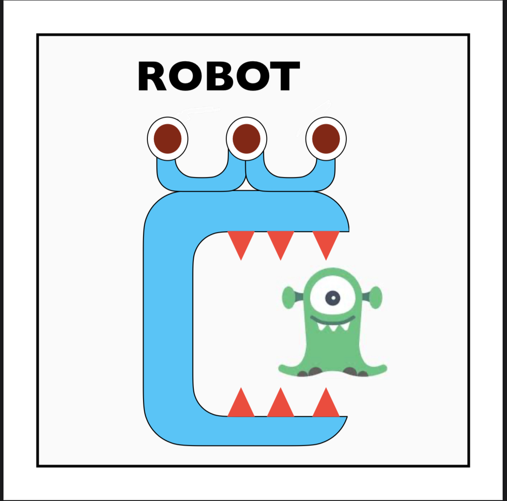

The Problem:
The Goal of this game is to naviage a robot equipped with one arrow around a 4X4 board in order to collect some gold and return to the starting position.
The robot starts in the lower left most corner, facing upwards.
However, there are obstacles the robot must avoid to and from the starting position.
The potential obstacles the robot may come across are Pits and the Wumpus.
In order to get past these dangers, the robot will recieve a signal once arriving at a tiles if the neighboring tiles have the wumpus or pits.
The Pits will emmit a "breeze" and the Wumpus a "stench".
The the gold (not a danger but the end goal) will also emmit a "glitter".
It is also important to note that the robot can recieve 0, 1, 2, or 3 signals all while at one tile.
These numbers of course depend on if the robot is on the edge or in the middle of the board.
If on the edge, the signals can only be coming from 2 of the 3 adjacent tiles as the one the robot came from can not possibly contain one of these elements.
If somewhere in the middle of the board, the signals could now be coming from 3 of the 4 adjacent tiles.
Nevertheless;
- The 0 scenario would be if no tiles around the robot contained a Pit, Wumpus, or Gold.
- The 1 scenario would be if one of the tiles around the robot contained a Pit, Wumpus, or Gold.
- The 2 scenario would be if two of the tiles around the robot contained a Pit and Wumpus, Pit and Gold, or Wumpus and Gold.
- The 3 scenario (only applicable if the robot is somewhere in the middle of the board - not on the edge) would be if three of the tiles around the robot contained a Pit and Wumpus and Gold.
If the robot does happend to come across the Wumpus and has determined its location in one of the adjacent tiles, the robot can shoot the Wumpus with the arrow.
In order for it to count, the robot must be facing the tile that the Wumpus occupies.
Shooting the Wumpus will result in the Wumpus disappearing off the board and its tile no longer emmiting a "stench" or be marked as a danger.
Our Algorithm:
Our algorithm works on some base rules/precedances:
- Each tile that the robot goes to is marked as explored.
- Given there are no signals at a tile, the robot has a precedance to move to an unexplored tile.
- ALSO, Given several unexplored tile options, the movement precedance is UP (north), RIGHT (east), DOWN (south), then LEFT (west).
- Given there are a signal(s) once arriving at a tile, all adjacent tiles except for the tile the robot came from will be marked with a possible "insert signal/danger here".
- After determining that a tile is safe, that tile will be marked as safe and be seen as a possible tile to move to.
Here is an example run of how our robot would solve the board:
The Team:
Team Members: Tyler K., Lily L, Jonathan S.
Robot 3C's Name: The Wumpus's Worst Nightmare
Logo for 3C:

Slogan: "We ecompass the board and destroy the Wumpus."